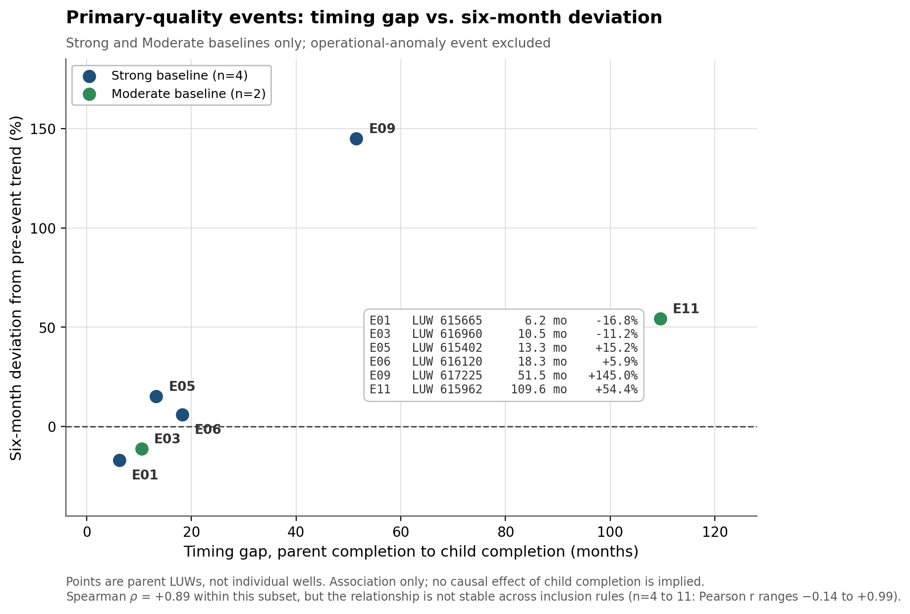

Haynesville parent-child interference from public production data
Independent Project / Haynesville Shale, De Soto Parish, Louisiana / Aug 2026
I built a public-data event study to test whether the timing between parent development and nearby child development was associated with deviations from parent-unit gas-production trends. Using Louisiana SONRIS well attributes, production records, and approximate wellbore geometry, I screened roughly 280 parent-child candidate pairs by timing, spacing, orientation, reservoir, field, and operator before analyzing 11 quality-controlled events and 143 monthly observations.
During data QA, I identified that Louisiana reports production at the Lease/Unit/Well (LUW) reporting-entity level rather than necessarily by individual well. I redesigned the methodology around stable parent reporting units instead of treating aggregate production as individual-well data. Timing alone did not show a stable relationship with production deviation across sensitivity groups, and the analysis exposed how strongly the result depends on the pre-event trend specification.
Final analytical sample
- Screened candidate pairs
- ~280
- QC-passing events
- 11
- Monthly observations
- 143
- Primary-quality events
- 6
- Timing range
- 6–110 mo
- Spacing range
- 331–1,085 ft
Exploratory public-data study. Results measure association with deviation from a pre-event trend and do not establish causal child-well effects.

Louisiana production is reported at the LUW reporting-entity level rather than necessarily by individual well. Discovering that limitation during QA led me to redesign the analysis around stable reporting units instead of creating unsupported per-well estimates.